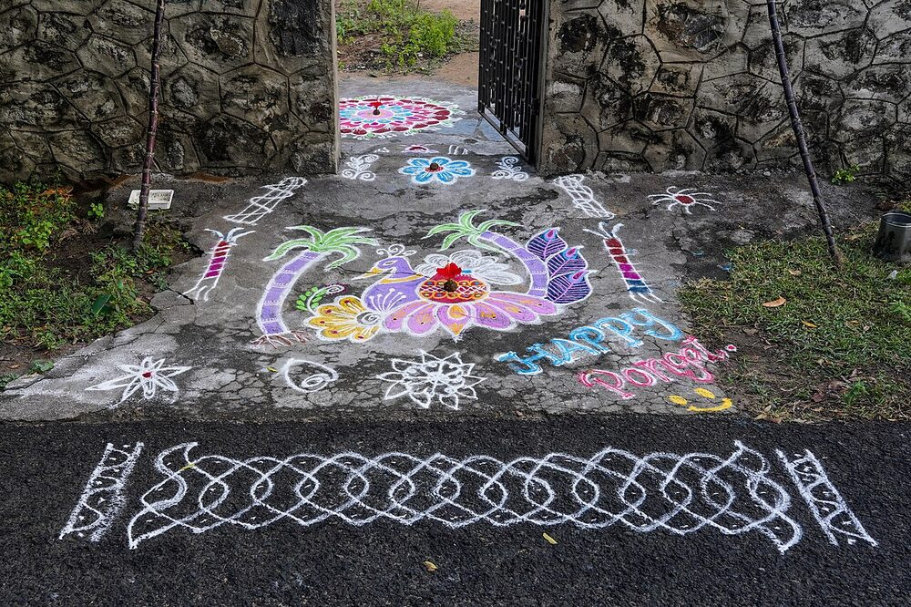
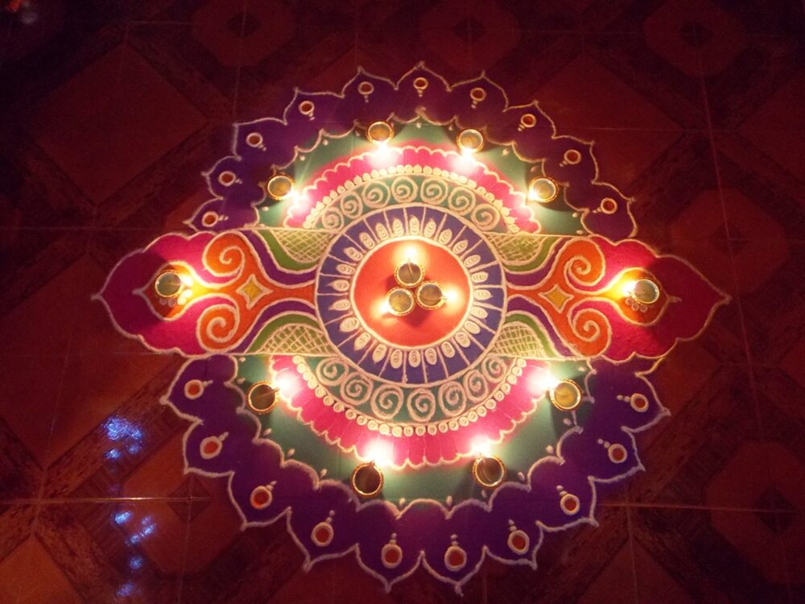
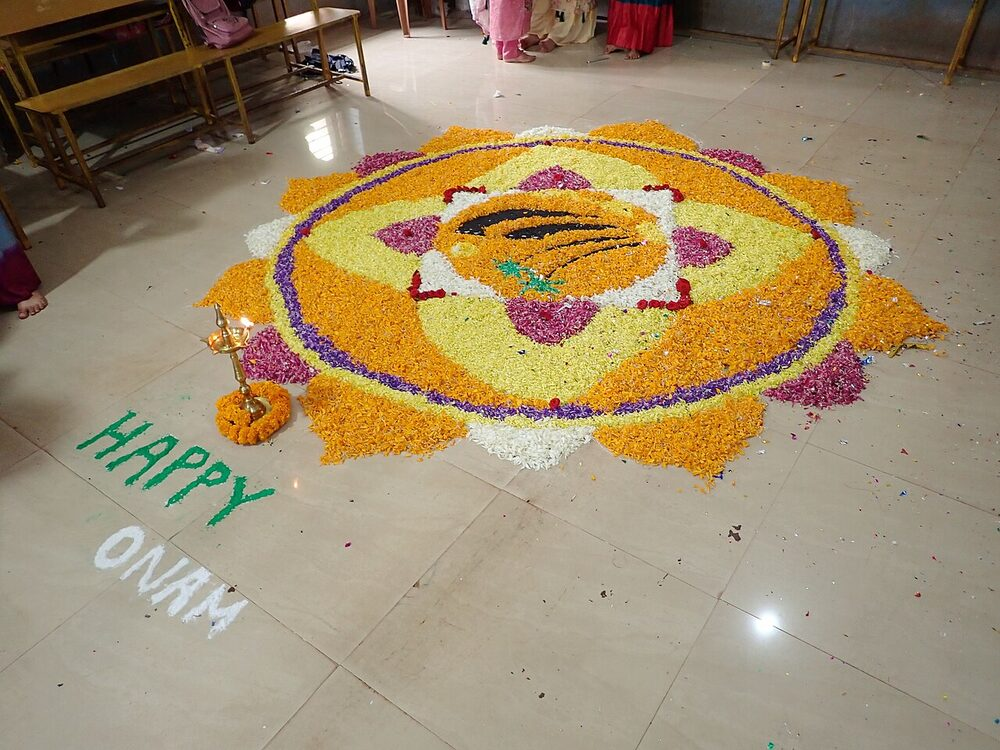

Traditional Indian Floor Art
Kolam & Rangoli
The Art of the Threshold
“Draw the threshold, welcome the world.”
Drawn at dawn, gone by night
Every morning across India the doorstep is swept, sprinkled with water and decorated before sunrise. In the South this is the kolam: lines of white rice flour drawn freehand, usually around a grid of dots, by the women of the house. In the North and West it is rangoli, from the Sanskrit rangavalli, “rows of colour”: designs filled with coloured powder, rice or flower petals, made above all for festivals.
Both are meant to be temporary. They are walked over, washed away and eaten by ants, then drawn again the next day.

One art, many names
- KolamTamil Nadu
- MugguluAndhra Pradesh & Telangana
- RangoliMaharashtra, Karnataka
- AlpanaWest Bengal & Assam
- AripanBihar
- MandanaRajasthan
- Chowk puranaUttar Pradesh
- PookalamKerala, in flowers
Patterns of the floor
Why we draw them
- Auspicious beginningsA kolam at dawn marks a home as clean and blessed, and invites Lakshmi, goddess of prosperity. Traditionally its absence signals mourning.
- A welcome at the thresholdThe doorstep is where the home meets the world. The design greets every guest and is believed to keep evil away.
- Food for small livesRice flour feeds ants, birds and insects: a daily act of sharing with other living beings.
- Festivals & celebrationsPongal and the month of Margazhi, Diwali, Onam, weddings and pujas bring larger, brighter designs.
- Skill passed downLearnt from mother to daughter and practised every morning, it trains memory, patience and a steady hand.
Did you know? Kolam is mathematics
A sikku kolam follows strict rules: a dot grid, one closed line, no loose ends, perfect symmetry. In the 1970s the Chennai computer scientist Gift Siromoney and his colleagues used kolams to define “kolam array grammars”, rules for generating pictures. Every sikku kolam on this poster was generated by a program that follows the kolam artist's rules.


Keep the threshold alive
Apartment corridors, tiled floors and rushed mornings are making the daily kolam rarer, and plastic stickers are replacing hand-drawn designs. Yet a kolam needs only a handful of rice flour and a few quiet minutes. Keeping this art alive does not need a museum, only a doorstep.
- Learn one kolam from an elder, and teach it to a child.
- Draw with rice flour, flowers and natural colours, not stickers or chemical powders.
- Photograph and record the patterns and names of your region.
- Join a Margazhi or Diwali kolam contest in your neighbourhood.
A line of rice flour at dawn is a welcome to the world. Let us keep drawing it.